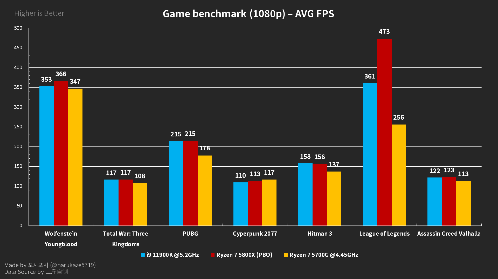
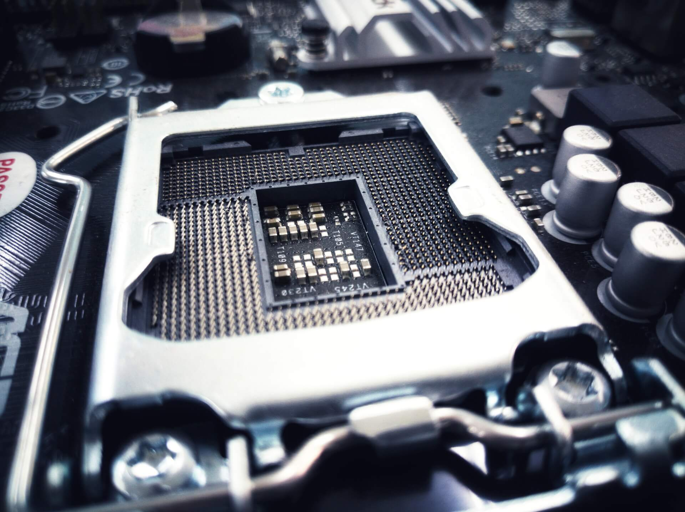

Comparativa: AMD Ryzen vs Intel
Introduccion
Rendimiento
Gráficos Integrados
Eficiencia energética
Precio$$
Compatibilidad y características
Rendimiento en juegos
Overclocking
1. Introducción

La elección entre procesadores AMD Ryzen e Intel es crucial para aplicaciones como juegos, edición de video y tareas profesionales.
Este informe compara ambos en términos de rendimiento, eficiencia, valor y características para ayudarte a tomar una decisión informada.
Regresar al menu
2. Rendimiento
2.1. Rendimiento de un Solo Núcleo
Intel:

Ventaja histórica en rendimiento de un solo núcleo, esencial para aplicaciones y juegos que no aprovechan múltiples núcleos.
Arquitectura eficiente con altos IPC (instrucciones por ciclo) y frecuencias de reloj elevadas.
Series recientes como la 14ª generación (e.g., i9-14900K) continúan mejorando en este aspecto.
AMD Ryzen:
Mejoras significativas en arquitecturas recientes como Zen 3 y Zen 4.
Ryzen 7000 (Zen 4) ofrece mejoras en IPC y frecuencias de reloj, igualando o superando a Intel en algunos casos.
2.2. Rendimiento Multinúcleo
AMD Ryzen:
Líder en relación precio-rendimiento: más núcleos e hilos por dólar.
Ideal para tareas paralelas como renderizado, edición de video y multitarea intensiva.
Series recientes: Ryzen 9 (e.g., 7950X) sobresalen en benchmarks multinúcleo.
<5>Intel:
Procesadores de gama alta muestran un fuerte rendimiento multinúcleo.
Arquitectura híbrida en la 14ª generación optimiza tareas distribuidas.
Regresar al menu
3. Gráficos Integrados
Intel:
Iris Xe Graphics ofrece mejor rendimiento en gráficos integrados.
Adecuado para juegos ligeros y multimedia sin necesidad de una GPU dedicada.
AMD Ryzen:
Ryzen APUs con gráficos Vega o RDNA 2 han mejorado, aunque aún por detrás de Iris Xe.
Suficiente para tareas básicas y algunos juegos ligeros.
Regresar al menu
4. Eficiencia Energética
Intel:
Conocido por su eficiencia energética, especialmente en dispositivos portátiles.
Arquitectura híbrida mejora la gestión de energía en la 14ª generación.
AMD Ryzen:
Mejoras significativas en eficiencia energética con arquitecturas Zen 3 y Zen 4.
Aún detrás de Intel en escenarios de bajo consumo, especialmente en laptops.
Regresar al menu
5. Precio y Valor
AMD Ryzen:
Mejor relación precio-rendimiento: más núcleos e hilos a precios equivalentes.
Series Ryzen 5 y Ryzen 7 son atractivas por su valor en el segmento medio.
AMD RYZEN 7
AMD RYZEN 5
Intel:
Suele tener un precio más alto a niveles de rendimiento equivalentes.
Gráficos integrados y características premium pueden justificar el precio adicional.
Intel I5 10th
Intel Celeron
Intel Pentium
Regresar al menu
6. Compatibilidad y Características

Intel:
Adopción rápida de nuevas tecnologías como Thunderbolt y PCIe 5.0.
Socket LGA 1700 y chipsets de la serie 600 y 700 soportan características avanzadas.
AMD Ryzen:
Uso del socket AM5, con buena compatibilidad hacia atrás con AM4.
Soporte a largo plazo facilita actualizaciones.
Regresar al menu
7. Rendimiento en Juegos
Intel:
Rendimiento ligeramente superior en juegos debido a velocidades de reloj más altas y optimizaciones.
Optimización por parte de desarrolladores que a menudo favorece a Intel.
AMD Ryzen:
Mejoras en arquitecturas Zen 3 y Zen 4 han reducido la brecha, haciendo a Ryzen competitivo para juegos.
Excelente relación precio-rendimiento en configuraciones de juegos de gama media y alta.
Regresar al menu
8. Overclocking
Intel:
Facilidad con CPUs de la serie "K" que están desbloqueados.
Potencial para alcanzar frecuencias elevadas con refrigeración adecuada.
AMD Ryzen:
Soporta overclocking, aunque puede requerir más ajustes manuales.
Ryzen Master y otros softwares han simplificado el proceso.
Regresar al menu
9. Conclusión
AMD Ryzen:
Pros: Excelente relación precio-rendimiento, fuerte en rendimiento multinúcleo, buen soporte de actualización.
Contras: Gráficos integrados más débiles, menor eficiencia energética en portátiles comparado con Intel.
Intel:
Pros: Mejor rendimiento de un solo núcleo, gráficos integrados más potentes, eficiencia energética superior en laptops.
Contras: Menor valor en términos de núcleos e hilos por dólar, menor cantidad de núcleos/hilos a precios similares en algunas gamas.
Recomendación:
Para juegos y tareas ligeras: Intel ofrece ventajas en rendimiento de un solo núcleo y gráficos integrados.
Para tareas intensivas y multitarea: AMD Ryzen es preferible por su mejor rendimiento multinúcleo y valor general.
Regresar al menu